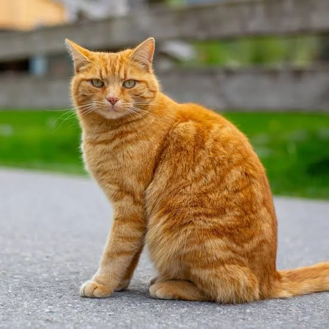

The cat, also called domestic cat and house cat, is a small carnivorous mammal. It is an obligate carnivore, requiring a predominantly meat-based diet. Its retractable claws are adapted to killing small prey species such as mice and rats.